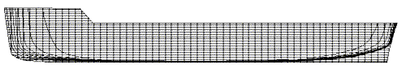
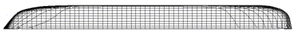

| HOME
Hull Lofting Tutorial: |
| >Start: 0 Set the first dxf: 1 Paste other dxf's: 2 Loft profiles: 3 Loft test: 4 Loft Better: 5 Shelling: 6 Full Length: 7 Keel, Mirror & Render: 8 |
| Background: |
| The ship lines were created by Dr Allen Magnuson in Feb 2005 using Vacanti Prolines LE. The data was exported in 2D dxf format, then traced in TurboCad Pro 8.2. Hull is based on the proportions of Noah's Ark according to Genesis 6:15. Tutorial by Tim Lovett Feb 05. |
LOFTING TUTORIAL: A ship hull in 3d
See also: PDF printable version (1MB)
(PDF conversion thanks to Joe Hren on TurboCad User Forum - requires free login)
http://forums.imsisoft.com/forums/Index.cfm?CFApp=200&Message_ID=360986
To Start with...
We want to turn 2D ship lines into a 3D CAD model. Start with 3 sets of lines - body, profile and plan drawings in dxf format as shown below. These drawings have 60 stations which is a bit excessive. This is OK - we will simply ignore some of them, especially in the 'boring' midship area.
 Body.dxf
Body.dxf

Profile.dxf
Plan.dxfDefinitions
Station. A cross-section taken across the width and height of the hull. The shape of the hull at each station appears in the Body lines drawing.
Waterline. A cross-section taken as a horizontal plane. The waterline shape appears in the Plan.
Buttock lines. The vertical longwise plane - the shape is shown in the Profile view.
dxf. A generalized drawing format used for transporting drawings between different CAD programs. There are both 2d and 3d dxf formats, but 2d is very well known. There are alternative 3d conversion formats that are more modern and reliable than the 3d dxf. The disadvantage of converting to dxf is that the curves are broken into pieces and approximations are made. In our case we are simplifying
Checklist
- Ship lines - body, profile and plan in dxf format.
- Knowledge of the scale. You want to ensure these drawings import into the 3D modeler at the right scale. If not you will need to scale them correctly in 3D mode.
- A 3d CAD program that supports 'lofting' (a 3D shape formed through a series of 2D cross sections). In this tutorial we are using Turbocad v8, but other (more expensive) CAD programs could do the job. (Autocad, Solid Works, Solid Edge, Inventor, Rhino, etc)
Remember - Slow and steady - its quicker when you only have to do it once.
|
Tim Lovett © 2005 | All Rights Reserved| http://www.worldwideflood.com
|